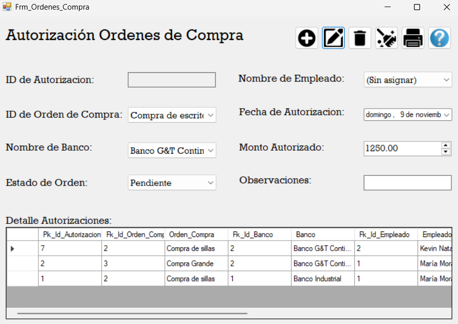

Registrar, modificar, eliminar e imprimir autorizaciones de órdenes de compra,
validando que el banco tenga fondos suficientes cuando la autorización se marca como Aprobada.

Pantalla principal
ID de Autorización: se llena automáticamente al guardar (solo lectura).
ID de Orden de Compra: al elegir una orden, el Monto Autorizado se completa automáticamente con el monto solicitado.
Nombre de Banco: banco que financiará la orden.
Nombre de Empleado: autorizador; puede quedar en (Sin asignar).
Fecha de Autorización: fecha del registro.
Monto Autorizado: autocompletado por la orden; el sistema valida contra el saldo del banco.
Estado de Orden:Pendiente, Aprobada o Rechazada.
Observaciones: comentarios opcionales.
Detalle Autorizaciones (tabla): lista registros; al hacer clic en una fila, los datos suben al formulario para edición.
Botones
Agregar: crea una nueva autorización con los datos del formulario.
Actualizar: guarda cambios del registro seleccionado.
Eliminar: borra el registro seleccionado (pide confirmación).
Limpiar: reinicia el formulario.
Ayuda: muestra esta guía.
Cómo usar
1) Crear una autorización
Selecciona ID de Orden de Compra → el Monto Autorizado se rellena solo.
Elige Banco y, si aplica, Empleado.
Selecciona Estado:
Aprobada: se verifica que el banco tenga saldo disponible ≥ monto. Si no, no permite guardar.
Rechazada: permite guardar aunque no haya fondos.
Pendiente: guarda sin validar fondos.
Opcional: escribe Observaciones.
Presiona Agregar para guardar.
2) Modificar una autorización
Haz clic en la fila del Detalle Autorizaciones.
Edita los campos necesarios.
Presiona Actualizar.
3) Eliminar una autorización
Selecciona la fila en la tabla.
Presiona Eliminar y confirma.
4) Imprimir
Presiona Imprimir para abrir el reporte de autorizaciones.